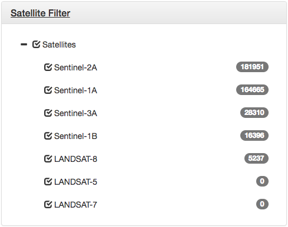

Refining Your Search
At the moment there are more than 1.4 million satellite scenes in the archive and this is growing every day.
In order to get the most use out of the Satellite Data Finder, it is important to refine your search. The number of hits, for your current search parameters, is displayed below the Export Results button. Only 1000 will be drawn on the map or are extractable via the Export Results dialog to increase performance.
Temporal Filter
This element will allow you to refine your search with temporal parameters. You can enter a start time and end time, click Apply Filters and the interface will search for satellite data that was recorded within that period.
To help you see the distribution of data over time, there is a convenient histogram underneath the start and end time box. A larger bar means that more data files were recorded within that time period. Note that the histogram displays counts for all available data, and is not modified by changing the filters.
Clicking the histogram bars is a shortcut to selecting a specific year but it will likely be necessary to refine your search further to get the most benefit from the interface.
Change Map Centre
This element allows you to search for a location. If it finds what you're searching for, the map will centre on the matching location. You can enter several different types of things to find a location. For example, all of the things below are valid location searches:
- Place names (e.g. "Scotland", "London", or "Turl Street")
- Postcodes (e.g. "90210" or "OX11 0QN")
- Coordinates (e.g. "51.2W, 31.0N" or "51.7595, -1.2325")
Rectangle Search
Found in the top right corner of the map. Toggle On by clicking the button. When turned on, draw on the map using the cursor. Once your drawing is complete, the map will search for results which intersect the box drawn.
Only 100 are drawn to avoid overburdening the map.
You can resize the rectangle using the white nodes. You can also move the rectangle by grabbing one of the sides, marked by the black line.
The coordinates of the NW and SE corners are automatically updated in the Rectangle Search pane on the left hand side of the screen.
The Clear Results button will remove all the coloured polygons from the screen. This can make it easier to edit the rectangular bounding box. Simply click Apply Filters to get results matching your bounding box.
The rectangle and all other filters can be removed by clicking "Clear Filters".
When the rectangle tool is On, panning is disabled on the map. Turn the tool off to resume panning.

Satellite Filter
This element provides checkboxes to filter down the specific satellites which you want to retrieve data from. The number displayed to the right of the element indicates the number of datasets available given the current filters.
For example:

Given the current selection, there are no datasets from the Landsat Missions 5 and 7. You can try changing the time range or search area.
Apply Filters
This button simply applys any search criteria you may have entered. For example, if you have supplied a date range and a keyword, clicking "Apply Filters" will apply these criteria to your search.
Certain things are done automatically - the Geographical Search will reresh your results once you click Go and the Satellite Filter is applied without needing to click "Apply Filters".
Clear Filters
This clears the map of all objects, data polygons and rectangles, and resets all the filters to a neutral state.